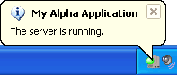

Using a Systray Caption to differentiate multiple server instances
The Application Server creates an icon in the Windows Systray to access the Control Panel and indicate the server's state. Each icon is visually identical when running multiple instances of the Application Server, so it becomes difficult to associate each icon with the correct server instance. However, setting a Systray Caption on the Advanced tab of the Application Server Control Panel makes it much easier to determine which icon is associated with which server instance. When hovering your mouse over the icon, Windows shows a popup bubble which includes the caption and the server state, as shown below. The caption is also reflected in the window title of the Application Server Control Panel, when visible.

Note: In order for the caption to be updated after making a change, the Application Server must be exited and restarted.